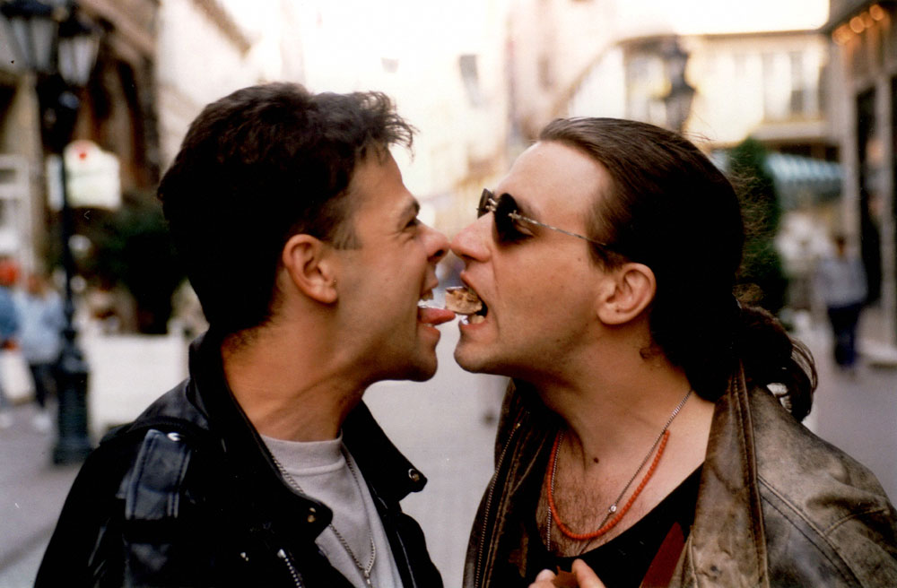

Puno je vode proteklo od kako su Van Gogh krenuli Tragovima prošlosti i zaurlali Svet je moj. Doneli su Strast svojoj Zemlji čuda u kojoj vlada Besnilo. Unapred su zavapili Hodi da bi posle svega priznali: No Comment! Tako je oduvek – na Poljima snova svako pleme zna da najduže traje Opasan ples. “Ljudi se cesto pitaju zašto smo se odlučili baš za ovo ime koje smo dali grupi. Nastojimo da napravimo jednu lucidnu Vangogovsku sliku stvarnosti”. Grupa je osnovana januara 1986 godine. Činili su je Zvonko Đukić Đule, gitarista, Srboljub Srba Radivojević, bubnjar, pevac Goran Milisavljević i basista Predrag Popović (ex Rock Express). Đule je prethodno svirao u srednjoškolskom sastavu Haos dok mu je rođeni brat Ljuba bio klavijaturista Električnog orgazma.
Van Gogh rad obnavlja 1990. objavljivanjem promo singla “Gubiš me” i albuma “Svet je moj” (1991) gde se Đule prvi put ogleda u ulozi pevača. Tim povodom za Radio TV reviju kaze: “Želim da se vratimo singlom. To je početak ostvarivanja moje stare ideje da svaka dva meseca izdajemo po jedan singl da bismo na kraju godine kompletirali nekakvu retrospektivu”. Ploča je nastajala dugo, u njenom radu učestvuju i Srba Radivojević (bubanj) i Vladan Cvetković (kao koncertni bubnjar), basista Aleksandar Aca Barać i klavijaturista i producent Vlada Barjaktarević. Kao gosti tu su Milan Mladenović, Margita Stefanović, Zoran Švaba Radomirović, Nera i Tanja Jovićevic. Đule je autor većine materijala a pesmama “Neko te ima”, “Gubiš me” usložnjavaju svoj osnovni zvuk.